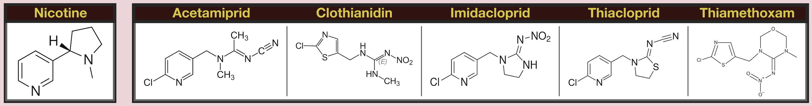
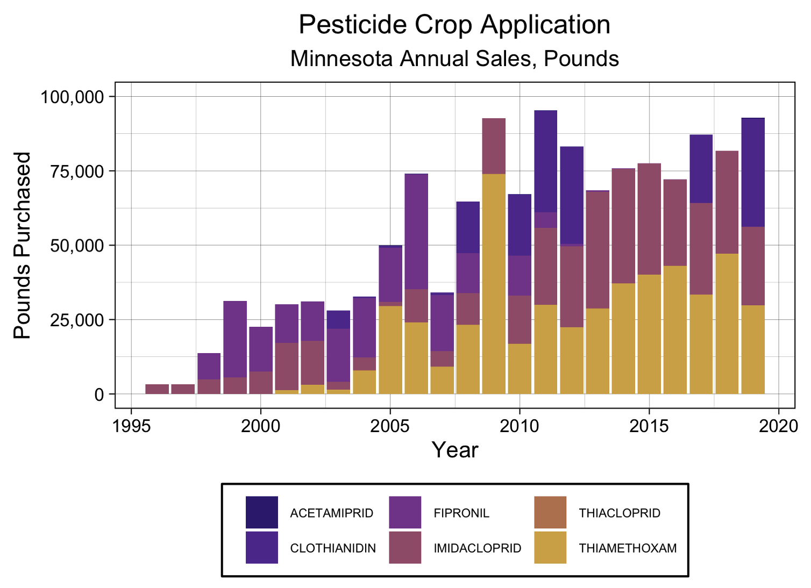
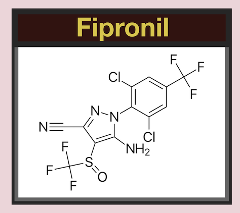
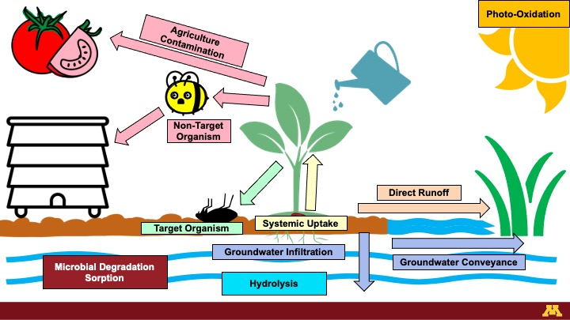

My research focuses on occurrence and fate of first generation of neonicotinoids (i.e. classical neonicotinoids) and fipronil insecticides in environs. My main research focuses include:
Fate in surface water systems.
Fate in groundwater systems.
Transport processes via surface runoff and groundwater infiltration.
Fate and removal by conventional and advanced drinking water treatment plants.
Occurrence, fate, and removal by activated sludge and membrane bio reactor-equipped (MBR) waste water treatment plants.
Occurrence, fate, and degradation by industrial and residential-scale composting operations.
What are Neonicotinoids?

"Neo" meaning "new" and nicotinoids meaning "Nicotine-Like":
Neonicotinoids are a suite of systemic pesticides first derived from nicotine in the early 1990's and are now one of the most frequently-applied pesticides in the world! The most common neonicotinoids include:
Imidacloprid, Clothianidin, Thiamethoxam, Thiacloprid, and Acetamiprid. Chances are if you've eaten produce or food produced using grain in the last 30 years, then chances are you've eaten something containing neonicotinoids!

(Minnesota Dept. Agriculture 2019)
Neonicotinoids are by-far the most popular pesticide used in Minnesota agriculture With 90,000 pounds of pure product sold in 2019 alone. The most common applications of neonicotinoids include:
Seed coatings, spray treatments, and soil treatments for agricultural operations,
- direct injections for the spot treatment of nuisance diseases in woody plants,
termite prevention and wood preservation,
flea and tick medications,
bedbug treatments,
and more!
Neonicotinoids are a systemic pesticide, meaning that instead of just hanging around on the surface of the plant or in the soil, the insecticides are taken up and metabolized by the plant! Just like nicotine, neonicotinoids bind to the nicotinic acetylcholine receptor in the central nervous system. While this has a limited reaction in larger mammals, this can cause paralysis, seizures, and eventually death in insects! Ideally that would mean that neonicotinoids should be taken up and trapped in the body of the plant and only effect smaller pest insects without effecting larger organisms; Unfortunately that is often not the case. While much of the applied insecticides do remain in the body of the plant, it is not uncommon to find them where they shouldn't be! Our lab has detected them at appreciable concentrations all over, including in many of Minnesota's lakes, rivers, and springs. We even find them in waste water and drinking water plants! To learn more, check out our paper on
Neonicotinoids in Minnesota Surface Waters and take a look at my latest poster to be presented at the 2022 Gordon Research Conference on Water Chemistry! That not all, Neonicotinoids have been found in
grocery store produce,
agricultural products,
non-target insects,
honey,
tea,
pollinators,
human bodily fluids,
blood,
seminal fluid, and in
pregnant women. Just about everything that comes into contact pesticides directly or indirectly seems to have at least a bit of neonicotinoid in them.
What is Fipronil?

Fipronil and it's degradation products are phenylpyrazole insecticides commonly used in agriculture. First derived in 1996, fipronil is used at much lower rates than neonicotinoids and are typically focused in urban and residential areas. Common uses include:
spray treatments for agricultural operations,
direct injections for the spot treatment of nuisance diseases in woody plants,
termite prevention and wood preservation,
flea and tick medications,
bedbug treatments,
laws and turf care,
and more!
Unlike neonicotinoids, however, fipronil is a broad-spectrum insecticide which can effect organisms indiscriminately. Fipronil blocks the gabaa-gated chloride (Cl-) channels in the central nervous system of any organism unfortunate enough to be exposed and results in paralysis, seizures, and death. The lower specificity of fipronil means that a much wider suite of organisms may, and are, negatively effected. Fipronil has had observational effects on a large variety of organisms, and while it generally is not toxic to humans at low concentrations, has significantly impacted smaller non-target organisms including
fish and aquatic organisms and
pollinators.
Environmental Fate

Neonicotinoids
Neonicotinoids are highly soluble in water and experience high rates of transport as surface runoff or infiltration. Once in the water, they can survive thousands of days before degrading into one of their many degradation products and can be conveyed significant distances through streams and in groundwater, reemerging in lakes or in natural springs. In the water they can undergo hydrolysis, in which water molecules react with them to form dozens of primary transformation products. If they don't end up in water, sediment, particularly high-organic sediment, has shown to have a high sorption capacity for neonicotinoids; Meaning that neonicotinoids can hang around on soil and sediment particles until they are metabolized by bacteria or swept away in water. If left on the surface, neonicotinoids are susceptible to direct and indirect photolysis and can form a suite of products with many of the same characteristics, including similar toxicity. Finally, the neonicotinoids that make it into the body of the plant may remain in the plant and either end up in the final agricultural product and be processed into food products of remain in the root systems and either be composted or left to degrade in the field. Of course, nuisance insects may also eat the plants and be effected, but non-target insects such as pollinators may eat pesticide-containing plant material and be negatively impacted or return pollen to the hive where it may end up in they honey.
Luckily, though, neonicotinoids have very small Henry's constants and do not volatilize regularly into the air - one less thing for us to worry about!
Fipronil
Fipronil has a comparatively lower solubility in water and significantly higher sorption to soils and sediments. Fipronil's moderately hydrophobic structure means that it readily partitions to soil and has limited transport in water and air. Strong sorption to solids leads to a high fraction of fipronil retained in soil, sediment, and compost with few available routes from horizontal transfer to other media. That being said, fipronil has been observed at lower concentrations but at similar rates to neonicotinoids and other insecticides and it believed to use particulate in water and air to hitch a ride in streams and wind to contaminated secondary locations. Fipronil has relatively low rates of photolysis, hydrolysis, and microbial degradation in sediment and water. WHen degradation products do form, they are often eaully as toxic and have similar half-lives ranging in the thousands of days.
Why Should You Care?
While neonicotinoids are found in a huge variety of foods, they are at
very low concentrations - we're talking ng/L and ng/kg concentrations! While the harmful dosage is generally in the ug/kg range. That being said, not a whole lot is understood about neonicotinoid toxicity towards humans - so keep yourself informed on the latest research and always wash your produce!
The widespread occurrence of neonicotinoids, even at these low concentrations, are not something that should be ignored, however. While these low concentrations of insecticides aren't believed to be harmful to humans, they can wreck havoc on non-target insects and pollinators, including bees. It has been such a prevalent issue that the European Union even
banned the use of neonicotinoids for agricultural production in 2013. So while we don't have to worry about direct toxicity to humans, we certainly should begin looking for less harmful alternatives to help protect our pollinator friends!
Last Updated: 2022.08.23